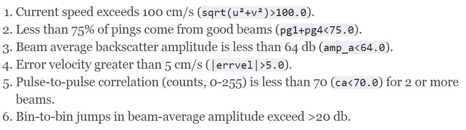

class: center, middle <br/><br/><br/><br/> .title[Processing of AeN mooring data] <br/> .subtitle[Overview of preliminary processing and diagnostics] <br/><br/> .date[June 2, 2020] <br/><br/><br/><br/><br/> .note[Created by Øyvind L with [{Liminal}](https://github.com/jonathanlilly/liminal) using [{Remark.js}](http://remarkjs.com/) + [{Markdown}](https://github.com/adam-p/markdown-here/wiki/Markdown-Cheatsheet) + [{KaTeX}](https://katex.org)] --- name: toc class: left #Table of Contents <br/> 1. .tocentry[[ADCP data](#adcp_data)] 1. .tocentry[[Data processing - 150 kHz ADCP](#data_proc)] 1. .tocentry[[Data processing - Signature 500](#data_proc_sig)] 1. .tocentry[[Results](#results)] 1. .tocentry[[Issues with current direction](#curr_dir)] 1. .tocentry[[Compass headings vs current directions](#heading_vs_dir)] <!-- Comment out the next slide if you don't want the Table of Contents link --> --- layout: true .toc[[✧](#toc)] --- name: adcp_data class: left .left-column[ # ADCP data Three moorings in the northern Barents Sea, all equipped with RDI 150kHz ADCPs. - Two standard moorings. - One bottom lander *(M3)*. Oct 2018 - Nov 2019] .right-column[] -- M1 and M2 also equipped with Nortek Signature 500 5-beam ADCPS at 25/28 m. --- class: left # ADCP data ## 150 kHz ADCP configuration Same for all three 150 kHz instruments. - Broadband mode. - 24 pings/ensemble. - 24 seconds per ping. - Averaging interval: 20 minutes. - Vertical bin size: 8 m. <br/> No compass calibration prior to deployment. --- name: data_proc class: leftfile:///media/sf_work/arven_etter_nansen/data/moorings/qc/adcp_proc_overview/adcp_proc_liminal_slides/adcp_proc.html#5 # Data processing - 150 kHz ### Initial steps -- Data converted from *.000* to *.mat* using RDI's *WinADCP* software. <br/><br/> -- Post-processing in Python using the (experimental) *oyv.data.rdi_adcp* module. <br/><br/> -- Bin depths calculated based on pressure: -- - Chopping away profiles from deployment/recovery (from *p*). - Removing obviously bad rows (above surface, etc.). - Removing rows near the transducer, or at the far end of the range that look like obvious anomalies in mean profiles of current components. -- *Successive tests used to mask invalid data* --- class: left # Data processing - 150 kHz ## Masking criteria Based loosely on the [IOOS Manual for Real-Time Quality Control of In-Situ Current Observations](https://repository.oceanbestpractices.org/bitstream/handle/11329/292/qartod_currents_manual.pdf?sequence=1&isAllowed=y).  --- class: left # Data processing - 150 kHz ## Magnetic declination correction Rotating the current vector to correct for time-dependent magnetic declination calculated using the [*geomag*](https://pypi.org/project/geomag/) module, which uses the NOAA National Geophysical Data Center, epoch 2015 data. For each time step, the operation is the equivalent of: ```haml import geomag magdec = geomag.declination(lat, lon, alt=0, num2date(t).date()) uvc_corrected = uvc_orig * np.exp(1j*magdec*np.pi/180) ``` Where *uvc = u + iv* is the complex velocity. *Deployment average magnetic declination error:* --- class: left # Data processing - 150 kHz ## Calculating shear Since adjacent depth bins are not entirely overlapping, vertical current shear is computed from first differencing of every second bin, i.e., e.g.: where *i*-indices denote vertical bins. --- class: left # Data processing - 150 kHz ##Example call to *oyv.data.rdi_adcp* --- class: left # Data processing - 150 kHz ## Interpolation Before analysis, all ADCP data (RDI 150 and Sig 500) was interpolated in time and depth. .smaller[ **Column-wise interpolation** All profiles linearly interpolated onto fixed grid with *dz* 2 m (RDI150) and 1 m (Sig 500). - Gaps of up to 1 cell - 8 m (RDI150) and 2 m (Sig 500) - were filled by interpolation, larger gaps left as invalid (masked).] .smaller[ **Row-wise interpolation**] .smaller[ 1. .smaller[All data linearly interpolated onto a uniform, high-resolution time grid (*dt=19.7/9 min*). Gaps >2 hours left as invalid.] 1. .smaller[Then, a 9-point boxcar filter was applied in time, and the time series was subsampled every 9 points -> Uniform grid with *dt* = 19.7 s.] ] --- class: left # Data processing - 150 kHz ## Example of processing (M1 ADCP) --- name: data_proc_sig class: left # Data processing - Sig 500 ### Processing of Signature 500 data Processing similar to RDI 150 kHz ADCP (chopping, magnetic declination correction, interpolation, etc.) - implemented in the *oyv.data.signature_adcp* module. First, all daily *.ad2cp* files are converted to average *.mat* files with Nortek's *Deployment* software. Then, the daily *.mat* files are loaded and joined into *numpy* arrays using the *read_join_signature_adcp_avg()* function, then subject to processing steps. --- class: left # Data processing - Sig 500 ## Masking criteria Based on [IOOS Manual](https://repository.oceanbestpractices.org/bitstream/handle/11329/292/qartod_currents_manual.pdf?sequence=1&isAllowed=y) and [recommendations from Nortek](https://www.nortekgroup.com/assets/software/N3015-011-SignaturePrinciples.pdf). --- class: left # Data processing - Sig 500 ##Example call to *oyv.data.signature_adcp* --- class: left # Data processing - Sig 500 ## Example of processing (M1 Signature) --- name: results class: left # Results ### Currents, M1 (weekly means) --- class: left # Results ### Currents, M2 (weekly means) --- class: left # Results ### Currents, M3 (weekly means) --- class: left # Results ### Currents, M3 (weekly means) --- class: left # Results ### Full-resolution currents --- class: left # Results ### Correlation, RDI150 vs Sig 500 (M1) --- class: left # Results ### Correlation, RDI150 vs Sig 500 (M2) <img style="width:100%" src="./figures/scatter_u_v_sig_vs_rdi_m2.png"> --- name: curr_dir class: left # Issues with current direction - Compasses not calibrated. - Unknown whether M3 ADCP compass (mounted in metal lander) behaves. - Examining current directions agains various datasets. --- class: left ## LP current variance ellipses vs bathymetry - .smaller[M3 *very* contrary to expectations (strong down-gradient mean-current)] - .smaller[M1 and M2 ellipse rotated CCW of bathymetric contours by ~20°.] -> M3 looks **bad**, need to examine M1 and M2.. --- class: left ##Comparing with AOTIM-5 predicted tides .left-column[.smaller[HPFed currents depth averaged ADCP<br/>(*right:* predicted barotropic) <br/> <font color="#ffec5578">Variance ellipse of HPFed currents</font><br/> <font color="#fe5bac">Variance ellipse of tidal fit to 11 first tidal constituents</font>] ] -- .right-column[<br/> Comparison with tidal prediction again suggests that - **M3 is way off** - **M1 and M2 are both ~20° off** (both RDI150 and Sig 500).] -- .right-column[This happens to be similar to the magnetic declination correction.. ] --- name:heading_vs_dir class: left ##Compass heading vs current direction ### *M1 150 kHz* <br/><br/> <br/> Some correlation between current direction and compass heading. --- class: left ##Compass heading vs current direction ### *M1 150 kHz (detided currents)* <br/><br/> <br/> Correlation slightly weaker when taking out the tides. --- class: left ##Compass heading vs current direction ### *M2 150 kHz* <br/><br/> Small range in both compass heading and current direction<br/><br/> -> Difficult to establish correlation.. --- class: left ##Compass heading vs current direction ### *M2 150 kHz (detided currents)* <br/><br/> Removing the tides has little effect. --- class: left ##Compass heading vs current direction ### *M1 Sig 500* <br/><br/> <br/> Strong correlation in Signature 500.. --- class: left ##Compass heading vs current direction ### *M1 Sig 500 (detided currents)* <br/><br/> <br/> Correlation much reduced when detiding --- class: left ##Compass heading vs current direction ### *M2 Sig 500* <br/><br/> <img style="width:100%" src="./figures/head_vs_curr_m2_sig500.png"> --- class: left ##Compass heading vs current direction ### *M2 Sig 500 (detided currents)* <br/><br/>